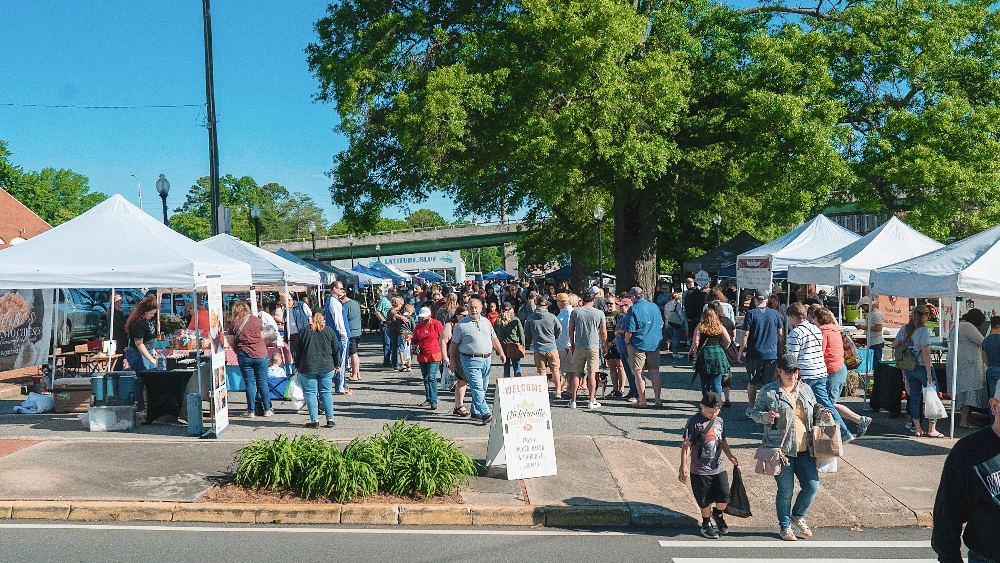

what i do
i work as a freelance photographer, social media strategist, and website designer. i am presently employed at the cartersville farmers market, where i work as the director of digital media to design and maintain our website, lead our social media campaigns, photograph our wonderful market, and assist our vendors with cultivating an online presence of their own.
in the past, i have worked as a contract, special-events photographer for the downtown cartersville development authority, and as an assistant producer for events and social media content at my school.
in the past, i have worked as a contract, special-events photographer for the downtown cartersville development authority, and as an assistant producer for events and social media content at my school.

experience
freelancer
ongoing
barista
noble and main coffee co.
apr 2021 – present
apr 2021 – present
director of digital media
cartersville farmers market
apr 2020 – present
apr 2020 – present
skills
photography・storytelling・social media・digital design・adobe photoshop・adobe illustrator・adobe lightroom・adobe premiere pro・squarespace・webflow・writing・pragmatism・coffee drinking・self-motivated・digital-native・relationship building・process-oriented・networking